Stencils
All of his paper cuttings are hand drawn, and hand cut. These concepts and designs are created with only the use of a compass, protractor, straight edge, pencil, and xacto blade. Individual pieces can require a hundred plus hours to complete, making this form a guided meditation for the artist.


 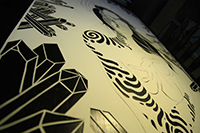
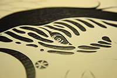
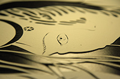
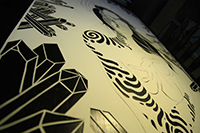
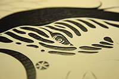
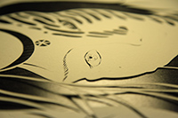


 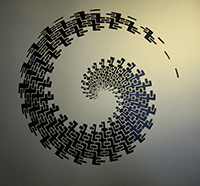
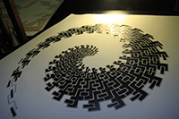
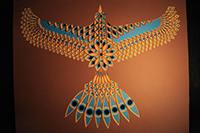
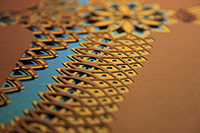
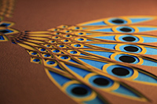
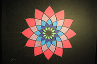
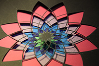
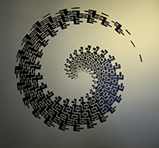
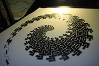
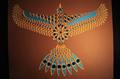
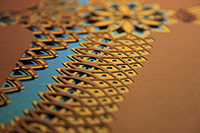
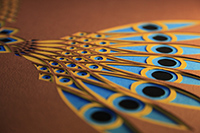
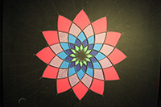
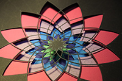
 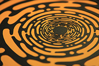
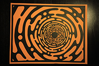
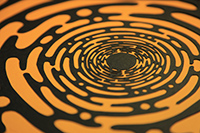
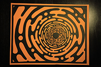